This study systematically identifies and categorizes conceptual metaphors related to inflation in ECB board member communications, following the methodology outlined by Chunyu Hu and Zhi Chen in their paper, "Inflation Metaphor in Contemporary American English". Analyzing a corpus of ECB communications from 2005 to 2024, we identify and classify inflation-related metaphors using regular expressions (REGEX), part-of-speech (POS) tagging, and neural network models. Our findings reveal a consistent use of inflation metaphors across ECB executive board members, with notable variations in frequency and type depending on the individual and the time period. We leveraged the GPT API to consistently label and categorize these metaphors, enabling robust performance analysis on the models and contributing to the emerging field of research in AI-driven text analysis.
Keywords: Conceptual Metaphors, Inflation, ECB Communications, Regular Expressions, Part-of-Speech Tagging, Neural Network Models, GPT API, AI-driven Text Analysis, Metaphor Classification
by Luis Francisco Alvarez, Sebastien Boxho & Mathieu Breier
July 2, 2024
Inflation stands as a pivotal concern for economic policymakers and financial analysts globally, particularly exacerbated by the aftermath of the Covid-19 pandemic. The sudden resurgence of inflation has thrust it back into the forefront of economic discourse, sparking intense debates and policy considerations. Explaining inflation and justifying monetary policies in this context often demands intricate and nuanced communication. Among the European Central Bank (ECB) board members, metaphors emerge as indispensable linguistic tools. These metaphors play a critical role in clarifying an abstract concept such as inflation and its surrounding phenomena, making them more accessible to diverse audiences.
This study aims to systematically identify and categorize conceptual metaphors related to inflation in ECB board member communications, following the methodology outlined by Chunyu Hu and Zhi Chen in their paper, "Inflation Metaphor in Contemporary American English". In this study, 'inflation' is treated in a broad sense, encompassing metaphors related to disinflation and deflation as well. Leveraging advanced methodologies such as regular expressions (REGEX), part-of-speech (POS) tagging, and neural networks for enhanced word embeddings, we aim to dissect the metaphoric language employed. Additionally, the integration of the ChatGPT API facilitates automated corpus labeling, enhancing efficiency and accuracy in metaphor identification.
By applying these analytical approaches, this study not only contributes to the understanding of how metaphors operate in economic discourse but also sheds light on their strategic use in communicating complex economic phenomena. The insights gained are expected to offer valuable implications for both academic research and practical policymaking strategies. More notably, this task can be insightful for further research into the way metaphors actually perform in a more qualitative way and their subsequent implications.
Finally, all of our working code and data files can be found in the Github repository.
Metaphors, by their very nature, bridge the gap between abstract concepts and more tangible, easily understood elements from the real world. More specifically, conceptual metaphors are mental mappings from a (typically concrete) source domain to a (typically abstract) target domain. In our analysis case, inflation metaphors are implemented in order to facilitate the broader audience's understanding. However, they serve not only to clarify, but also to legitimize potentially unpopular monetary policy measures. This persuasive power is essential in garnering support and drawing attention to the complex dynamics of inflation. As in Den Hartog et al. 1997: "metaphors can serve not just to entertain but also to inspire and persuade". Therefore, it is noted by Chunyu Hu and Zhi Chen in their paper, "Inflation Metaphor in Contemporary American English", metaphors can significantly influence public perception and policy reception.
The main goal of this paper, as stated before, is to set up an automated method to uncover these metaphors, by employing a multi-faceted analytical approach. First, the integration of the ChatGPT API facilitates our analysis, offering advanced natural language processing capabilities to identify and categorize metaphors while also serving as a proxy for human labeling and allowing for performance metrics calculation. We employ the GPT capabilities to replicate human labeling and later use these values for the evaluation of our models. Regex matching, Part of Speech tagging and Neural Network models are applied for the identification of metaphorical language patterns, related to inflation, within ECB speeches.
By exploring the inflation metaphors used, this paper aims to answer the fundamental question: do ECB board members actually use conceptual metaphors in their communications? Our findings indicate that they do. The subsequent objective is to understand how these metaphors are used. This study will shed light on the rhetorical strategies in economic discourse, emphasizing the role of language in shaping economic narratives and the perception of monetary policies.
By identifying and classifying these metaphors, this research quantifies the frequency and types of metaphors used by ECB board members. Additionally, by leveraging large language models (LLMs) for metaphor identification, this paper facilitates future research on the practical impacts of metaphors, such as their role in building legitimacy for monetary policy measures, explaining abstract economic concepts, and serving as persuasive tools in ECB communications. This investigation thus contributes to a deeper understanding of the prevalence and types of metaphors in economic discourse and sets the stage for further exploration into their effectiveness.
The fundamental challenge of this study is to build an automated process to consistently identify the conceptual metaphors discussed, applying the Hu et al. findings over the ECB conferences. We use similar techniques to the ones implemented in the study "Political Metaphors in U.S. Governor Speeches" by Léo Picard and Dominik Stammbach. This approach involves "a deep-learning-based algorithm that scores word pairs (adjective-noun, subject-verb, or verb-object) by their metaphoricity."
To effectively identify metaphors within the ECB board member communications, we employ a model similar to the one outlined in the paper Grasping the Finer Point: A Supervised Similarity Network for Metaphor Detection by Marek Rei, Luana Bulat, Douwe Kiela, and Ekaterina Shutova. This model employs a similarity neural network designed specifically for the task of metaphor detection. The approach combines the strengths of both neural networks and traditional (cosine) similarity measures, a common practice in natural language processing (NLP). It uses a supervised learning framework to train a network on a dataset of metaphorical and literal language examples. The network learns to identify metaphors by measuring the similarity between words in a context-sensitive manner, allowing it to grasp subtle differences in usage that signify metaphorical intent. Key components of the model include contextual embedding, which represents words within specific contexts to enable the model to differentiate metaphorical usage from literal usage, and similarity measurement, which calculates similarity scores between word pairs to help distinguish between these uses. By training on annotated datasets, the network predicts the likelihood of a given word being used metaphorically in a particular context.
This method enhances the accuracy of metaphor detection by incorporating a nuanced understanding of word meanings and their contextual relationships, rather than just comparing the "literal meaning" distance between the word pairs. Applying this model to ECB communications allows us to systematically identify and analyze the metaphors used, thereby contributing to a deeper understanding of the rhetorical strategies employed by board members.
The classification of these metaphors will be guided by the framework established by Hu and Chen, allowing for a structured understanding of how inflation is metaphorically conceptualized in the data corpus we shall be working on. This classification will reveal the underlying cognitive structures and rhetorical strategies employed by ECB board members to communicate their policies effectively.
Initially, we had a dataset of around 200 interviews provided by the ECB to work with. However, this data had some partitioning issues, an unstructured division between questions and answers, and several missing values. To address these problems, we decided to develop a web scraper to retrieve all the transcripts of interest directly from the Central Bank's website. The scraper parses the central bank's site using the Selenium package. Instead of using the original dataset provided with the challenge, we use our scraped data, which encompasses the entire original corpus and includes additional valuable information and observations.
This section was instrumental in accessing additional information from each document, such as the date, the speaker, and the questioner. We were also able to, more accurately, partition questions and answers directly from the source, rather than implementing a preprocessing pipeline to extract this information from the text, as we had initially planned. This method not only reduces the likelihood of errors but also results in a more structured dataset to exploit for our task.
The resulting data corpus counts a total of 519 interviews spanning from 2005 to early 2024. In Figure 1, we display the monthly number of interviews and the average European inflation rate, for the final 7 years of our period range and identify some key events, such as the Covid-19 pandemic and the outbreak of the Ukrainian-Russian war.
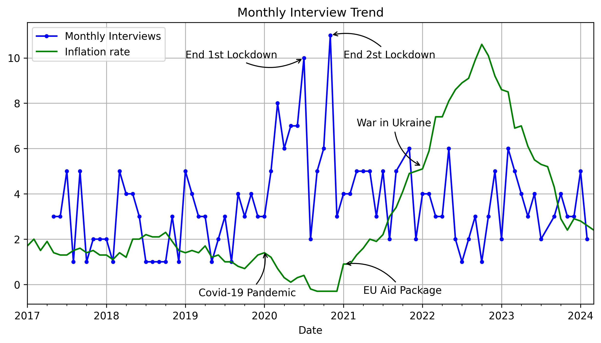
The final step in our information gathering process for this thesis involves collecting individual data from the board members. We selected several features for all the speakers:
All information was obtained directly from the ECB website. Given that we are dealing with 19 different ECB members who have been part of the executive board, we opted to manually scrape the necessary information for each individual case. This additional data proves valuable for subsequent quantitative analysis of the metaphors identified.
Initially, we did not have labeled data, as our dataset consisted solely of scraped transcripts from ECB communications. Therefore, it was essential to label the data to train a supervised learning model capable of predicting metaphors.
Our approach involved manually labeling a subset of 68 interviews to identify the inflation-related metaphors in each one. We adhered to the methodology outlined in the Hu et al. paper to ensure a consistent and rigorous labeling process. These manually labeled transcripts serve as our 'true labels', in order to compare with the GPT's output later.
The other task at hand was to classify the identified metaphors into their respective categories. In 85% of the sentences containing the word 'inflation,' we found that the word was used as part of a metaphor, which leaves an average of 7.25 metaphors per interview. We categorized our metaphors into the following 10 types:
| Categories | |
|---|---|
| Machine | Liquid |
| Disease | Animal |
| Plant | Sports |
| Warfare | Other |
| Fire | Orientation |
Some examples of the types of metaphors found in the corpus:
The GPT-4 API's capability to grasp and classify metaphors is supported by findings in the paper "Does GPT-3 Grasp Metaphors? Identifying Metaphor Mappings with Generative Language Models" by Wachowiak and Gromann. This study illustrates GPT-3's ability to understand and identify metaphorical language with a high degree of accuracy, providing a strong foundation for its use in our analysis of ECB communications. It demonstrates that generative language models like GPT-3, and subsequently GPT-4, possess a nuanced understanding of language, enabling them to detect and categorize metaphors effectively. Additionally, the robustness of GPT-4 in natural language understanding has been evidenced by various studies and applications, further validating its reliability for our purpose.
To ensure the accuracy of its classification, we compared the results to manually labeled data. This process was similar to the one used for metaphor identification. To enhance the robustness of the output, we used three different prompts and applied a majority voting system to obtain the final result. The baseline prompts were designed to instruct the model to identify and classify conceptual metaphors in a given set of sentences, returning the results in a standardized format. This approach helped mitigate variability in responses and ensure consistency.
| Prompt 1 | Prompt 2 | Prompt 3 | |
|---|---|---|---|
| Identify, extract and classify conceptual metaphors | ✓ | ✓ | ✓ |
| Definition of Conceptual Metaphors | ✓ | ✓ | ✗ |
| Example Categories (from Hu et al.) | ✓ | ✗ | ✗ |
| Examples metaphors / Counter-example | 5 / 3 | 2 / 0 | 9 / 0 |
A "majority vote" approach was employed to determine the final result, ensuring that at least two out of three GPT responses agreed on a metaphor for it to be selected. This method involved connecting to the GPT-4o model with a temperature setting of 0 and a seed of 123. Each interview was processed individually, resulting in a total of 204 API calls (68 interviews × 3 prompts).
The total number of sentences sent for analysis was 577. Although ChatGPT occasionally returned sentences with slight grammatical variations, we used approximate string matching techniques to align the results with the initial sentences. Two methods were employed: Levenshtein distance and Fuzzy Matching. Fuzzy Matching proved to be more effective and appropriate for our needs, providing a higher degree of accuracy in matching the results to the initial sentences.
The results from the majority vote after the three GPT prompts indicate notable consistency:
| Returned | Ratio (%) | Sentences Identified (%) | Categories Identified (%) | |
|---|---|---|---|---|
| GPT 1 | 497 | 86.1 | 90.7 | 80.4 |
| GPT 2 | 497 | 86.1 | 91.1 | 78.1 |
| GPT 3 | 505 | 87.5 | 91.1 | 77.8 |
| Majority Vote | 506 | 87.7 | 91.1 | 80.0 |
| Human Label | 493 | 85.4 | 100 | 100 |
Out of the 505 categories, 7 were mistakenly categorized into different categories and thus added to 'other'. The lower categorization accuracy could be due to interpretation issues. Maintaining consistency in labeling has been challenging due to the subtle differences and context-dependent nature of many similar metaphors. One key difference noted between our manual labels and GPT's output is that the API classifies a considerable proportion of the observations into the 'other' category. In contrast, when reading the metaphors, we tended to assign them to one of our nine categories rather than 'other'.
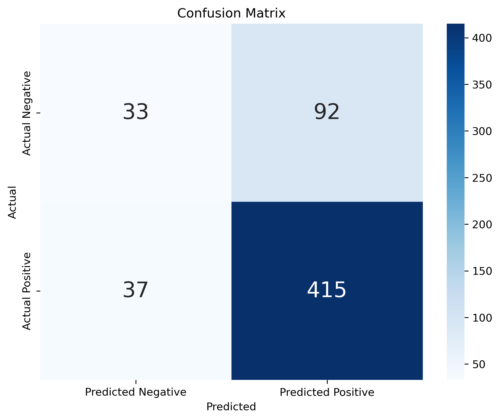
Given that this exercise proved to be accurate, we decided to label the entire dataset of ECB communications, thus significantly enhancing the efficiency and accuracy of our metaphor analysis. Ultimately, GPT-4o was used to label the entire dataset, employing the same three prompts and retaining only the majority vote decisions. This involved 3 × 519 API calls for the 519 interviews. Out of the 3437 sentences we successfully matched 97.5% of the metaphors back to the initial sentences using Fuzzy matching. The majority vote approach resulted in 3083 metaphors, with 88.4% of the sentences being identified as metaphors.
| Returned | Ratio (%) | |
|---|---|---|
| GPT 1 | 3060 | 89.0 |
| GPT 2 | 3073 | 89.4 |
| GPT 3 | 2999 | 87.2 |
| Majority Vote | 3083 | 88.4 |
By using GPT-4o and the majority vote method, we achieved a high level of accuracy in identifying and categorizing metaphors, thereby demonstrating the effectiveness of AI-driven text analysis in linguistic studies. Given the success of this approach in our initial analysis, we employed it to label the entire dataset of ECB communications, enhancing the accuracy and depth of our metaphorical analysis, contributing valuable insights to the field of AI-driven text analysis.
This section represents the core of our study, where we progressively build more complex model architectures to detect metaphors. We begin with a simple word matcher using regular expressions, progress to a naive part-of-speech (POS) comparison, and ultimately apply a neural network model as described in Rei et al. to capture deeper and more nuanced embeddings in the text.
For all the following methods, we employ a standard preprocessing pipeline. This involves lowercasing all words, removing special characters, numbers, and stopwords, and finally tokenizing the words for modeling. It is important to mention that we chose not to modify punctuation, as we need to preserve full stops to separate sentences.
To evaluate the performance of our models, we compare their detection with our 'augmented' manually labeled dataset. By using the GPT-labeled output as the true labels, we can subsequently compute performance metrics for our models.
Our first model is based on regular expressions to identify metaphors in the text. This method involves scanning sentences for the presence of both inflation-related terms and a set of predefined keywords. The list of relevant words for the metaphors is derived from the Hu et al. paper. Despite its simplicity, this method mirrors the approach used in the paper mentioned previously, where metaphors are defined and subsequently categorized based on the presence of specific keywords. This approach aligns with the methodology we used for manually labeling the interviews and will be the closest to what is done in the paper.
In addition to the preprocessing pipeline mentioned earlier, we also apply lemmatization to both our data corpus and our set of keywords. The logic behind this pruning approach is to account for variations of our words of interest that may appear in the text, ensuring we do not miss any relevant terms. For instance, the word accelerate may appear in the corpus as accelerating, and with the lemmatization method, we can match both variations to the dictionary form, lemma: accelerate.
We identify relationships between the word "inflation" and a predefined set of keywords within three syntactic structures:
POS tagging involves labeling each word in a sentence with its corresponding part of speech, such as a noun, verb, adjective, etc. This process helps in understanding the grammatical structure of the text. In our context, we use POS tagging to identify specific syntactic relationships that involve the word "inflation" and our set of keywords.
This method extends our initial Regex identifier, for a more precise prediction of metaphors. By checking for specific syntactic relationships, we can better determine the metaphoricity of matches. Naturally, we expect this model to predict fewer metaphors overall, but those identified should be more accurate representations of true metaphors.
Unlike the first model, here we are required to retain all tokens (words) in their original form initially. This is because Part of Speech (POS) tagging relies on analyzing words within the context of their sentences. Pruning the words to their base forms right away would strip away these important contextual interactions. Therefore, lemmatization must be performed after POS tagging and before matching keywords, ensuring we preserve the necessary context for accurate tagging, but we are also able to match out keywords as done in the previous model.
To enhance the detection and classification of metaphors, we employed a Neural Network approach. The rationale behind using a neural network is supported by the findings in the paper Neural Metaphor Detection in Context, which demonstrates their effectiveness in capturing the nuanced, metaphorical meaning of sentences. Given the task's complexity in understanding metaphorical context within sentences, neural networks provide a sophisticated method of analysis compared to simpler models. We opted for a basic yet robust implementation, acknowledging that while our approach may not compete with the most advanced neural network models, it remains effective for the scope of this study. The dataset was split into an 80/20% training-test ratio, resulting in 2,749 sentences for training and 688 for testing.
The model was designed for simplicity and efficiency, consisting of an embedding layer followed by dense layers with dropout and layer normalization to prevent overfitting. Specifically, we limited the architecture to a maximum of 3 hidden layers and a total number of weights between 200,000 and 400,000. Given our relatively small data corpus, fitting a highly complex model may not be the most suitable choice for our problem, and we conducted an optimization search to find the best configuration.
To improve the model, a grid search was conducted to explore different configurations of layers, learning rates, and other hyperparameters. This approach ensured the model achieved the best possible performance given the constraints. The optimal combination turned out to be two hidden layers with 220 nodes each, using the sigmoid activation function and a dropout rate of 0.5.
The final neural network model consisted of approximately 231,000 parameters, balanced between embedding and dense layers. This architecture, though basic, is effective in capturing the metaphorical meaning of sentences and provides a foundation for further refinement.
The decision to use a pre-trained Large Language Model (LLM) stems from our objective to assess the performance enhancement it offers without the computational overhead of training from scratch. In text classification, pre-trained large language models have demonstrated significant effectiveness, as evidenced by their successful application in various tasks.
Given the complexity of metaphor identification and the absence of available pre-trained models for metaphor identification or classification, we selected the general-purpose pre-trained model distilbert-base-uncased, consisting of approximately 66.3 million parameters. This model, though not specifically trained on metaphors, leverages its deep contextual understanding to perform effectively in this domain. We plan to fine-tune specific parameters of this transferred model to tailor it for our specific task setup. As with our previous approaches, the dataset was divided into a train-test split of 80/20%, resulting in a training set of 2,749 sentences and a test set of 688 sentences.
The model utilized the distilbert-base-uncased checkpoint. This architecture begins with an embedding layer sourced from the DistilBERT model, followed by a dense layer to process the embeddings. To mitigate the risk of overfitting, a dropout layer is included in the design.
To effectively leverage the pre-trained embeddings of DistilBERT, the model's layers were initially frozen. This approach allows the dense layers to benefit from the robust pre-trained representations without modification, thus expediting the training process. Following a preliminary warm-up period, the layers were unfrozen to fine-tune the model for our specific task. Hence, the training process was executed in two distinct phases:
By integrating a pre-trained large language model, we harnessed the capabilities of advanced transformer-based architectures. This approach facilitated a more nuanced and precise understanding of metaphorical language, thereby making a significant contribution to the field of AI-driven text analysis.
In this section, we present the results from the identification models. These results were obtained by evaluating data from the test set, which consists of a total of 688 sentences. Our first finding is that the Regex model shows fairly consistent performance across all computed metrics, with values around 68%. The Part of Speech model, on the other hand, performs poorly overall. This can be attributed to the method's reliance on a specific word pair structure, leading to the prediction of very few metaphors. Finally, both the simple neural network (NN) and the imported Large Language model perform similarly, with the latter having an edge in all categories. This indicates that the LLM was able to capture more nuanced embeddings in the text. However, when compared to the Regex model, the LLM cannot be definitively chosen over it. While the LLM achieves better accuracy, its recall is worse, indicating it does not offer a more comprehensive approach:
| Regex (%) | Part of Speech (%) | Neural Network (%) | LLM (%) | |
|---|---|---|---|---|
| Accuracy | 68.79 | 30.05 | 84.88 | 86.19 |
| Precision | 68.10 | 43.80 | 60.53 | 67.67 |
| Recall | 68.79 | 30.06 | 54.51 | 58.94 |
| F1 | 67.53 | 35.30 | 55.21 | 60.99 |
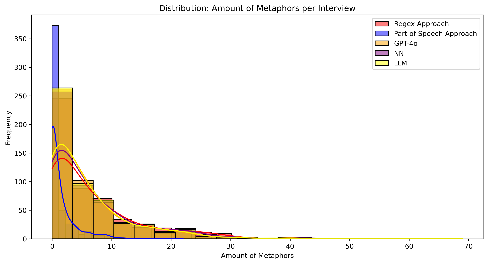
We observe that, in terms of metaphor identification, the empirical distribution of the results closely mirrors the true labels, except for the Part of Speech model. As previously mentioned, the Part of Speech model captures fewer metaphors.
After having identified the metaphors related to inflation in ECB communications, we proceed by analyzing who employed these metaphors and the context in which they were used by ECB members. This analysis seeks to offer a more profound comprehension of the role and use of metaphors about inflation within ECB communications.
To determine which ECB executive board members use metaphors most frequently in their communications, we calculated the total number of words spoken by each of the 19 members throughout the entire period. Next, we quantified the total number of metaphors each member used during this period. By dividing the number of metaphors by the total number of words spoken by each member, we obtained a ratio representing the frequency of metaphor usage per word spoken. This ratio allowed us to compare the metaphor usage across members, independent of their overall volume of speech.
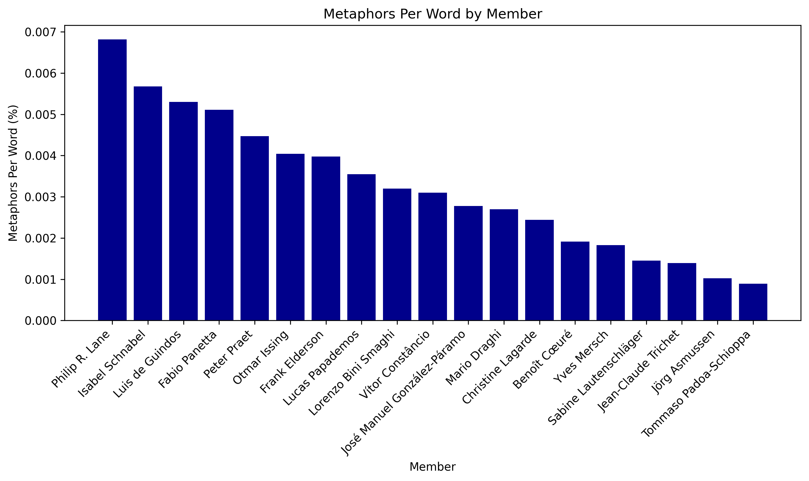
Figure 4 shows that Philip R. Lane (Chief Economist and Executive Member at the ECB), Isabel Schnabel (ECB Executive Member), and Luis de Guindos (Vice-President and Executive Member at the ECB) are the top three members in terms of metaphor usage per word. Philip R. Lane employs an average of 7 metaphors per 1,000 words, Isabel Schnabel uses 6 metaphors per 1,000 words, and Luis de Guindos averages 5.5 metaphors per 1,000 words.
Subsequently, we studied metaphor usage by gender. We calculated the ratio of total metaphors used by gender to the total number of words spoken by gender. The results are presented in Figure 5.
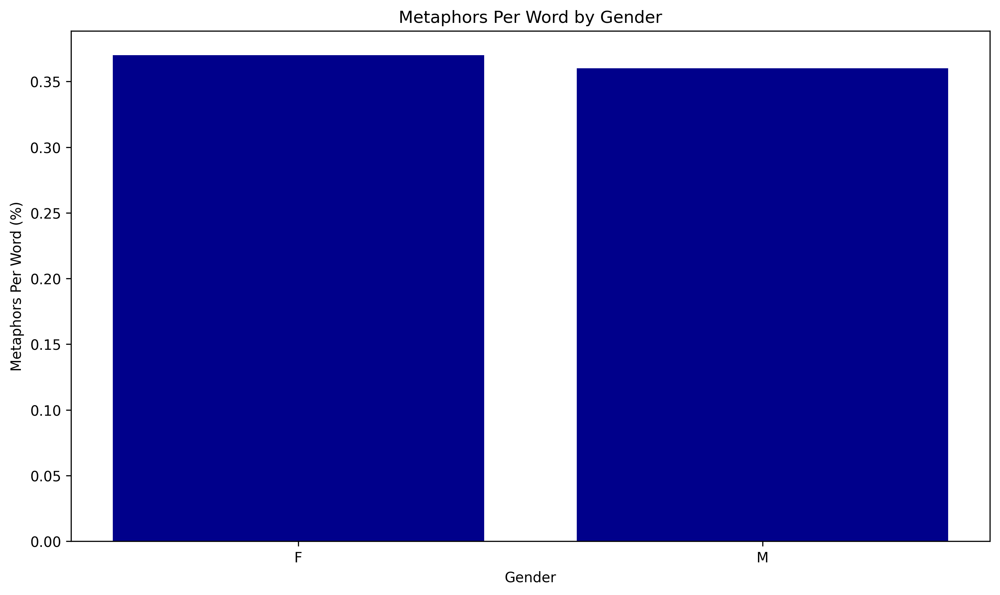
We observe no significant differences in metaphor usage about inflation between male and female ECB members.
Finally, we examined metaphor usage based on the media outlet conducting the interview with the ECB member. We calculate the ratio of metaphors per interview for the twenty media outlets with the highest number of interviews in the dataset. The results are depicted in Figure 6.
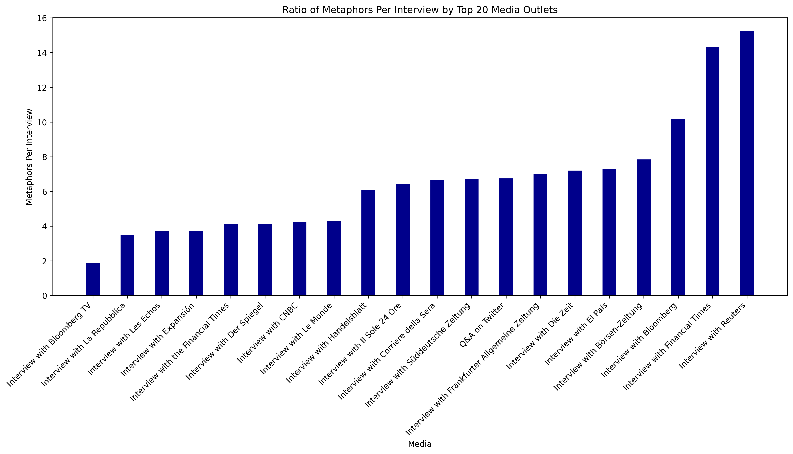
Figure 6 shows that ECB members tend to use more metaphors when interviewed by Reuters, the Financial Times, and Bloomberg. On average, ECB members use 15.25 metaphors per interview with Reuters, 14.30 metaphors with the Financial Times, and 10.18 metaphors with Bloomberg. This suggests that ECB members may tailor their communication style based on the media outlet.
To further investigate this assumption, we categorized each media outlet manually into two groups. Outlets focusing on economics, business, and finance were classified as "Economics and Finance," while those with different focuses were classified as "General." Figure 7 plots the ratio of metaphors per interview for these two categories.
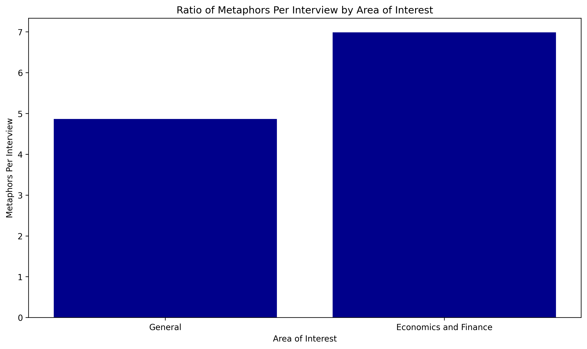
ECB members tend to use more metaphors per interview when speaking to media specializing in economics and finance — an average of 7 metaphors per interview compared to 4.9 with general media.
Next, we explore and try to understand which types of metaphors are most commonly used and whether any patterns exist concerning ECB members, gender, and media. We seek to explore how the usage of each metaphor category varies across ECB members, genders, and media outlets. As a reminder, each metaphor was initially classified into one of 10 different categories: fire, disease, plant, warfare, orientation, sports, machine, liquids, animal, and others. For example, the metaphor "cool down inflation" was classified under machine. The metaphors "Even 3% inflation will hurt fixed payments eventually," "The battle against inflation is not over yet," and "the threat of deflation could come to the fore" were classified under warfare. Metaphors such as "inflation tends to rise," "maintaining inflation rates below but close to 2 percent," and "inflation will converge," which illustrate ideas and concepts using directions, were classified under orientation.
We then studied which metaphor categories were most commonly employed in ECB member speeches. We decided to remove the "other" category, which accounts for 26% of all metaphors, as we believe it does not provide valuable insights into the ECB's communication style:
| Category | Count | Percentage (%) |
|---|---|---|
| orientation | 1326 | 59.12 |
| disease | 279 | 12.44 |
| machine | 238 | 10.61 |
| warfare | 212 | 9.45 |
| plant | 66 | 2.94 |
| fire | 40 | 1.78 |
| liquids | 39 | 1.74 |
| sports | 25 | 1.11 |
| animal | 18 | 0.80 |
The most commonly used metaphor categories by ECB members are orientation, disease, machine, and warfare, accounting for 59.12%, 12.44%, 10.61%, and 9.45% of all identified metaphors, respectively. Before delving deeper into the usage of different metaphor categories, we chose to eliminate the "orientation" category. Metaphors under "orientation" were the most frequent, with terms like "higher inflation," "increasing inflation," and "the ability of inflation to return" often cited as conceptual metaphors in literature. However, we found that these terms do not provide valuable insights into the ECB's communication strategy. Instead, they align more closely with standard economic terminology rather than offering a distinct analogy about inflation.
Subsequently, we analyzed the types of metaphors about inflation used by each ECB executive member. Table 7 displays the most frequently used metaphor category for each ECB member:
| Member | Most Frequent Category | Count |
|---|---|---|
| Benoît Cœuré | disease | 29 |
| Christine Lagarde | machine | 18 |
| Fabio Panetta | disease | 13 |
| Frank Elderson | disease | 5 |
| Isabel Schnabel | warfare | 47 |
| Jean-Claude Trichet | machine | 29 |
| José Manuel González-Páramo | disease | 2 |
| Jörg Asmussen | machine | 4 |
| Lorenzo Bini Smaghi | disease | 1 |
| Lucas Papademos | fire | 4 |
| Luis de Guindos | machine | 41 |
| Mario Draghi | disease | 15 |
| Otmar Issing | machine | 1 |
| Peter Praet | disease | 38 |
| Philip R. Lane | machine | 53 |
| Sabine Lautenschläger | disease | 4 |
| Tommaso Padoa-Schioppa | fire | 1 |
| Vítor Constâncio | disease | 13 |
| Yves Mersch | disease | 7 |
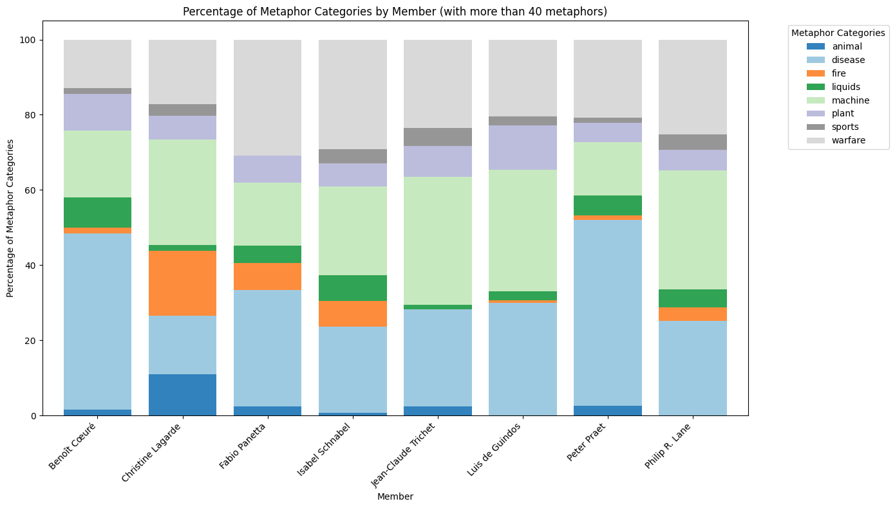
Christine Lagarde (President of the European Central Bank) uses significantly more metaphors about inflation from the fire and animal categories compared to other members. Fabio Panetta and Isabel Schnabel also employ more metaphors from the fire category relative to other members. Conversely, most other members seldom use metaphors from the fire category. Benoît Cœuré and Peter Praet tend to favor metaphors from the disease category. Metaphors from the machine and warfare categories are used by all members, and their usage is relatively uniform across the board.
Next, we look at the differences in the use of metaphor categories by gender. Results are shown in percentages in Figure 9.
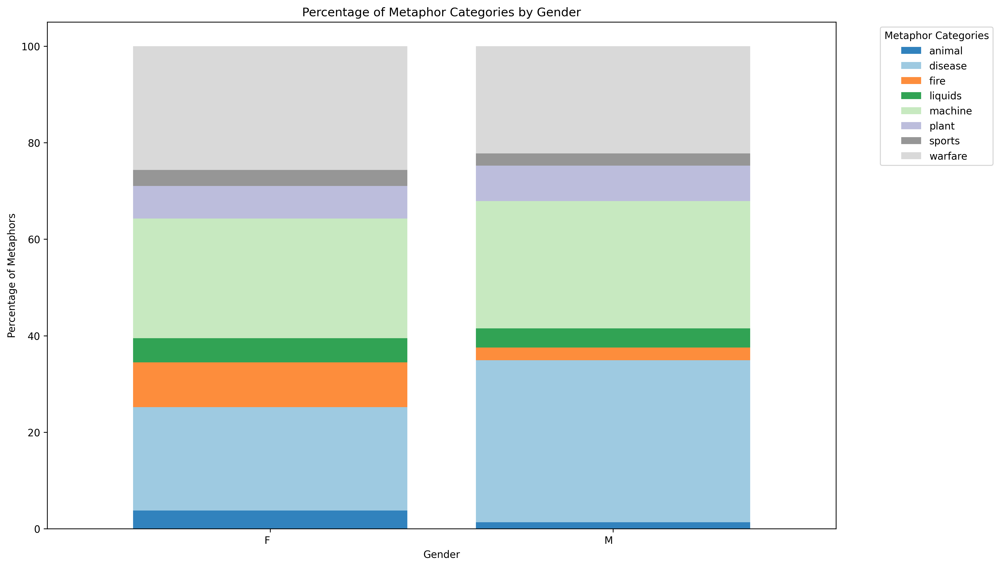
Figure 9 reveals several notable differences in the use of metaphor categories between male and female ECB executive board members. Female members tend to use more metaphors from the fire, animal, and warfare categories but fewer from the disease category compared to their male counterparts. Conversely, there are no significant differences between genders in the use of metaphors from the liquids, sports, machine, and plant categories.
Lastly, we investigate the relationship between the types of metaphors used by ECB members and the ten media outlets with the most interviews. First, we grouped all the metaphors by these top ten media outlets and summed the occurrences of each category. To facilitate comparison, we converted these numbers into percentages. The results are illustrated in Figure 10.
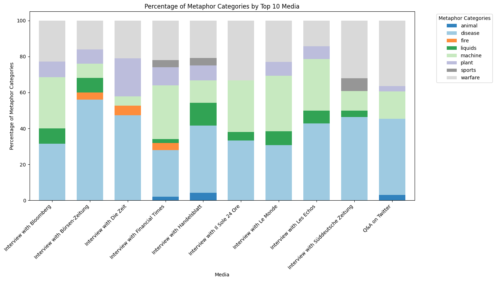
Next, we decide to examine the types of metaphors about inflation used based on the media's area of interest. Using the same media classification as before, we explored any differences in the types of metaphors employed by ECB members when interviewed by media specializing in economics and finance compared to general media. Our findings are presented in Figure 11.
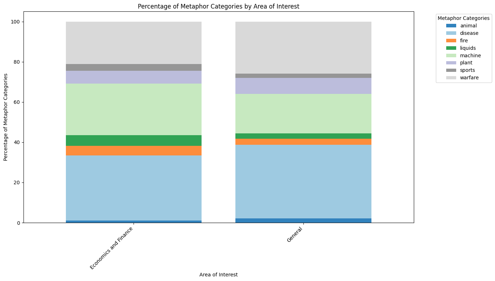
Figure 11 shows distinct patterns in the metaphor usage by ECB members based on the type of media. Specifically, ECB members tend to employ more metaphors from the machine category and fewer from the sports and disease categories when interviewed by media specializing in economics and finance. Metaphors from other categories are used with similar frequency across both specialized and general media.
This thesis sets out to systematically identify and categorize conceptual metaphors related to inflation in the communications of ECB board members, employing advanced methodologies such as regular expressions, part-of-speech tagging, and neural networks. In particular, this study lays the foundation for further research.
Our analysis confirms that ECB board members consistently use metaphors when discussing inflation, reflecting the complex and abstract nature of economic concepts. There was no substantial improvement when implementing more complex models for detection. However, this result may stem from the strict definition of metaphors as per the referenced paper. Considering more flexibility in the structure of metaphors could potentially enhance the performance of large language models and lead to better detection improvements.
Among the identified metaphors, the most prevalent categories were orientational, warfare, and disease. These categories reveal the board members' tendencies to frame inflation in familiar and relatable terms, highlighting the underlying narratives that shape public understanding and policy perceptions. For instance, orientational metaphors suggest movement and directionality, warfare metaphors evoke a sense of struggle and conflict, and disease metaphors imply a pathological condition needing remedy. We also find that female executive members tend to use more metaphors from the fire, animal, and warfare categories compared to their male counterparts.
Interestingly, more metaphors are employed when answering questions for economic-specific news portals compared to mainstream media. Contrary to our initial hypothesis that speakers might use more metaphors when addressing a broader audience, it appears that they employ more metaphors when communicating with more specialized listeners.
The use of the ChatGPT API was instrumental in automating the labeling and categorization process, ensuring efficiency and accuracy. This integration underscores the potential of leveraging advanced language models in linguistic research, offering new avenues for future studies.
This study provides an overview of metaphor usage by ECB board members and paves the way for further research that could delve into the specific functions of these metaphors and explore the distinctions among different metaphor categories. Additionally, examining how these metaphors influence public perception and policy effectiveness would be a valuable extension of this work.
In conclusion, the findings affirm that metaphors are a pivotal element in the discourse on inflation among ECB board members, shaping both the communication strategy and the interpretative frameworks of economic policies.
Metaphors and Inflation: A Study of ECB Communication
The Github repository: https://github.com/lalvarezpoli/DSDM_Thesis
You can contact me through my email: mathieu.breier@bse.eu
You can download my CV here
Follow me on these social media platforms:
Github: https://github.com/mtbrr26
LinkedIn: https://www.linkedin.com/in/mathieu-breier/
© Mathieu Breier